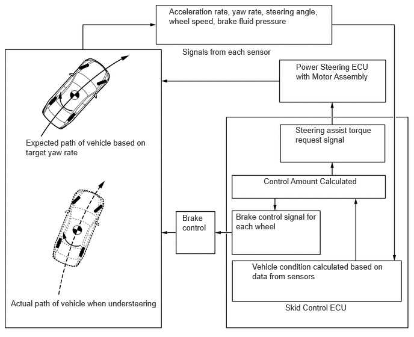
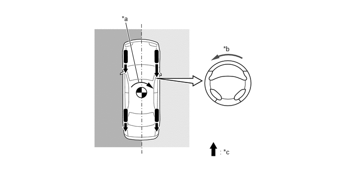
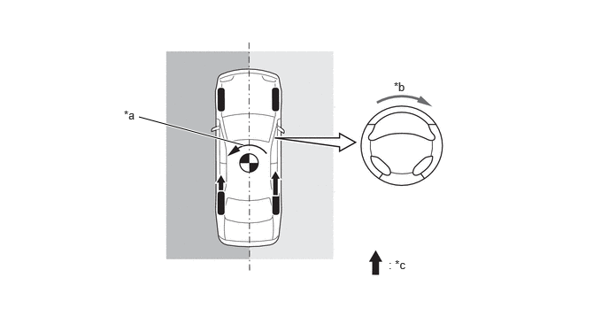
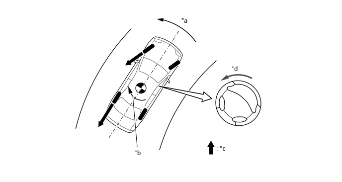
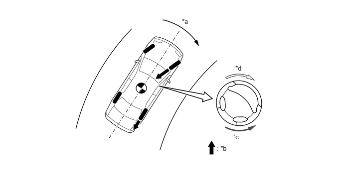

| Last Modified: 10-07-2025 | 6.11:8.1.0 | Doc ID: NM100000002GOKG |
| Model Year Start: 2024 | Model: Tacoma | Prod Date Range: [12/2023 - ] |
| Title: BRAKE CONTROL / DYNAMIC CONTROL SYSTEMS: BRAKE CONTROL SYSTEM (for Gasoline Model): STEERING COOPERATIVE CONTROL; 2024 - 2026 MY Tacoma [12/2023 - ] | ||
STEERING COOPERATIVE CONTROL
SYSTEM CONTROL
(a) Steering cooperative control integrates control of the brake system and power steering system in order to achieve excellent vehicle stability and smooth control.
(b) When accelerating or braking on a split friction road, or when the vehicle is understeering or oversteering, steering cooperative control operates each system according to the situation and controls the steering assist torque to urge the driver to perform corrective steering.
General Overview of Steering Cooperative Control
(c) Brake Control on Split Friction Road
(1) When braking on a split friction road surface, such as when the left wheels are on asphalt and the right wheels are on snow, the vehicle tends to steer to the side with more friction. In addition to conventional ABS system control, steering cooperative control controls the steering assist torque to urge the driver to perform corrective steering to counter the yaw moment generated by the difference in brake force of the left and right wheels.
Brake Control on Split Friction Road
|
*a |
Yaw Moment due to Difference in Brake Force of Left and Right Wheels |
*b |
Steering Assist Torque Required to Cancel Yaw Moment due to Difference in Brake Force of Left and Right Wheels |
|
*c |
Brake Force |
- |
- |
 |
Low Friction Surface |
 |
High Friction Surface |
(d) Acceleration Control on Split Friction Road
(1) When accelerating on a split friction road surface, such as when the left wheels are on asphalt and the right wheels are on snow, the vehicle tends to steer to the side with less friction. In addition to conventional TRAC system control, steering cooperative control controls the steering assist torque to urge the driver to perform corrective steering to counter the yaw moment generated by the difference in drive force of the left and right wheels.
Acceleration Control on Split Friction Road
|
*a |
Yaw Moment due to Difference in Drive Force of Left and Right Wheels |
*b |
Steering Assist Torque Required to Cancel Yaw Moment due to Difference in Drive Force of Left and Right Wheels |
|
*c |
Drive Force |
- |
- |
|
Low Friction Surface |
|
High Friction Surface |
(e) Control when Vehicle is Oversteering
(1) To determine if the vehicle is oversteering, the vehicle compares the slip angle with the target yaw rate, based on the steering angle and vehicle speed, with the actual yaw rate. If it is determined that the vehicle is oversteering, the vehicle primarily controls the brake force of the outer wheels to generate a moment toward the outside of the turn in order to minimize the oversteer. In addition, steering cooperative control controls the steering assist torque to urge the driver to perform corrective steering.
Control when Vehicle is Oversteering
|
*a |
Control Moment when Vehicle is Oversteering |
*b |
Yaw |
|
*c |
Brake Force |
*d |
Steering Assist Torque Applied to this Direction to Control Oversteering of Vehicle |
(f) Control when Vehicle is Understeering
(1) To determine if the vehicle is understeering, the vehicle compares the target yaw rate, based on the steering angle and vehicle speed, with the actual yaw rate. If it is determined that the vehicle is understeering, the vehicle limits the drive force and controls the brake force of each wheel in order to generate a moment that aligns the vehicle with its intended path in order to minimize the understeer. In addition, steering cooperative control controls the steering assist torque to urge the driver not to excessively turn the steering wheel.
Control when Vehicle is Understeering
|
*a |
Control Moment when Vehicle is Understeering |
*b |
Brake Force |
|
*c |
When Understeering, Opposing Force which Makes it Difficult to Further Turn Steering Wheel when Detrimental to Vehicle Stability |
*d |
When Understeering, Direction in which Steering Assist Torque Makes it easy to Turn Steering Wheel to Aid Vehicle Stability |